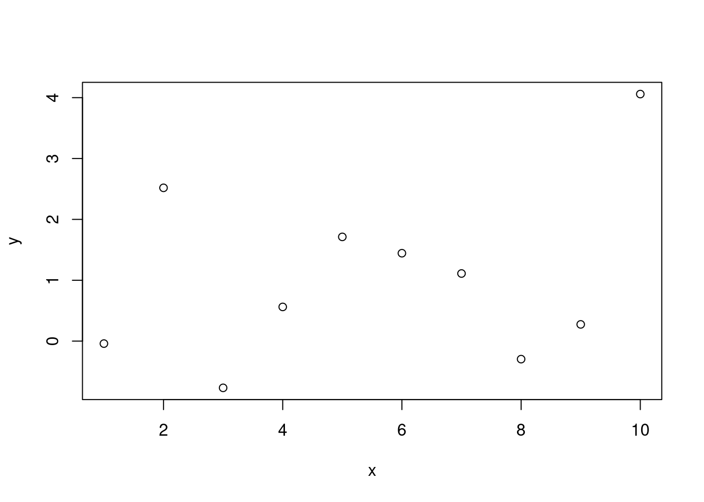
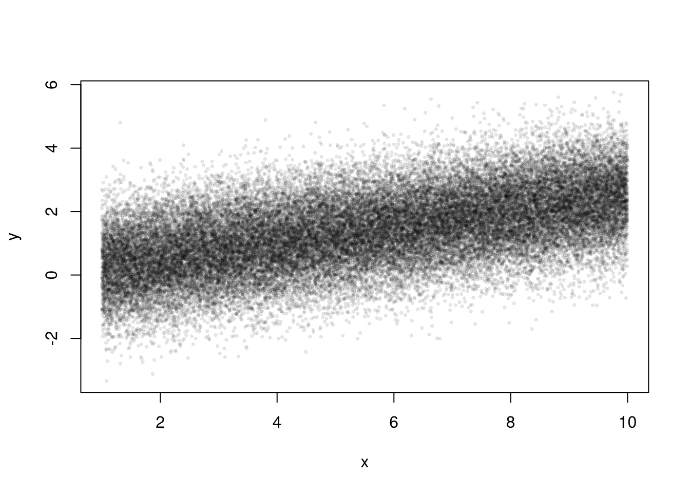
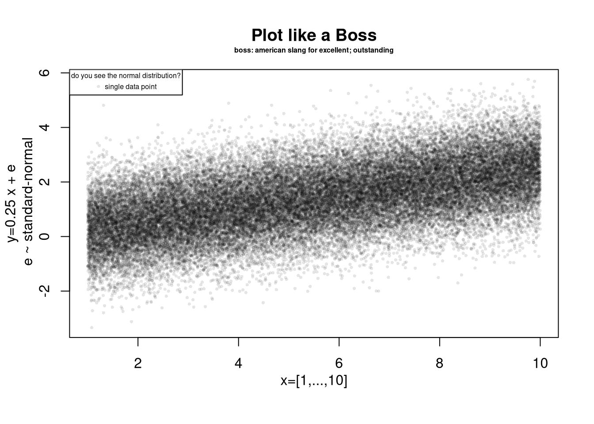

Chapter 3 Plots
3.1 Basics
Create and Plot a Toy Dataset
x <- seq(1,10) ## create values for x
## Create random standard-normal noise
rnorm(length(x), mean=0, sd=1) ## noise ## [1] 0.02670293 -2.26348177 0.19548411 0.92732821 1.67161579 -1.11109267
## [7] 1.06120522 -1.30145355 1.48748799 0.30585605rnorm(length(x), mean=0, sd=1) ## new noise## [1] 0.19667183 0.47375306 1.71303774 0.64873912 0.69532776 0.04782434
## [7] -1.09426845 -1.40207242 -0.39898018 -0.77535847e <- rnorm(length(x), mean=0, sd=1) ## store
y <- .25*x + e ## create values for y
xy_mat <- cbind(x=x, y=y)
## your first plot is pretty standard
plot(y~x, xy_mat) ## pretty and standard
Create and Plot a Larger Toy Dataset
x <- seq(1, 10, by=.0002)
e <- rnorm(length(x), mean=0, sd=1)
y <- .25*x + e
xy_dat <- data.frame(x=x, y=y)
head(xy_dat)## x y
## 1 1.0000 2.6920282
## 2 1.0002 -1.1046446
## 3 1.0004 -0.3544202
## 4 1.0006 2.1044720
## 5 1.0008 1.7332295
## 6 1.0010 1.3192793plot(y~x, xy_dat, pch=16, col=rgb(0,0,0,.1), cex=.5)
3.2 Equation Fitting Example
Run and Plot an OLS Regression
reg <- lm(y~x, data=xy_dat)
summary(reg)##
## Call:
## lm(formula = y ~ x, data = xy_dat)
##
## Residuals:
## Min 1Q Median 3Q Max
## -3.7962 -0.6718 -0.0045 0.6747 4.4825
##
## Coefficients:
## Estimate Std. Error t value Pr(>|t|)
## (Intercept) -0.0009762 0.0109817 -0.089 0.929
## x 0.2502891 0.0018054 138.635 <2e-16 ***
## ---
## Signif. codes: 0 '***' 0.001 '**' 0.01 '*' 0.05 '.' 0.1 ' ' 1
##
## Residual standard error: 0.995 on 44999 degrees of freedom
## Multiple R-squared: 0.2993, Adjusted R-squared: 0.2993
## F-statistic: 1.922e+04 on 1 and 44999 DF, p-value: < 2.2e-16## Add the line of best fit
plot(y~x, xy_dat, pch=16, col=rgb(0,0,0,.1), cex=.5)
abline(reg)## Can Also Add Confidence Intervals
## https://rpubs.com/aaronsc32/regression-confidence-prediction-intervalsPolish and Export Your Plot
plot(y~x, xy_dat, pch=16, col=rgb(0,0,0,.1), cex=.5,
xlab='', ylab='') ## Format Axis Labels Seperately
mtext('y=0.25 x + e\n e ~ standard-normal', 2, line=2)
mtext('x=[1,...,10]', 1, line=2)
title('Plot like a Boss')
title('boss: american slang for excellent; outstanding',
cex.main=.5, font=1, line=1)
legend('topleft', legend='single data point',
title='do you see the normal distribution?',
pch=16, col=rgb(0,0,0,.1), cex=.5)
Can export figure with specific dimensions
pdf( 'Figures/plot_example.pdf', height=5, width=5)
plot(y~x, xy_dat, pch=16, col=rgb(0,0,0,.1), cex=.5)
dev.off()